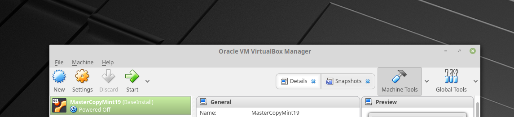
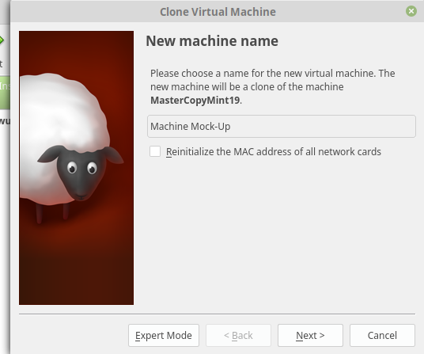
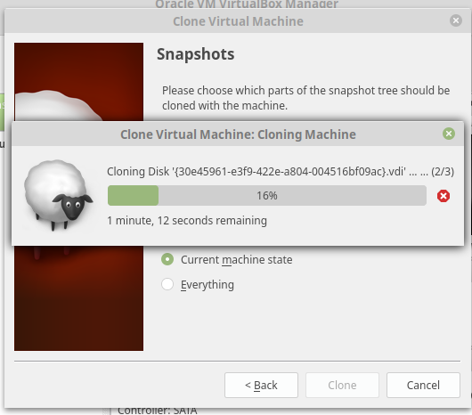
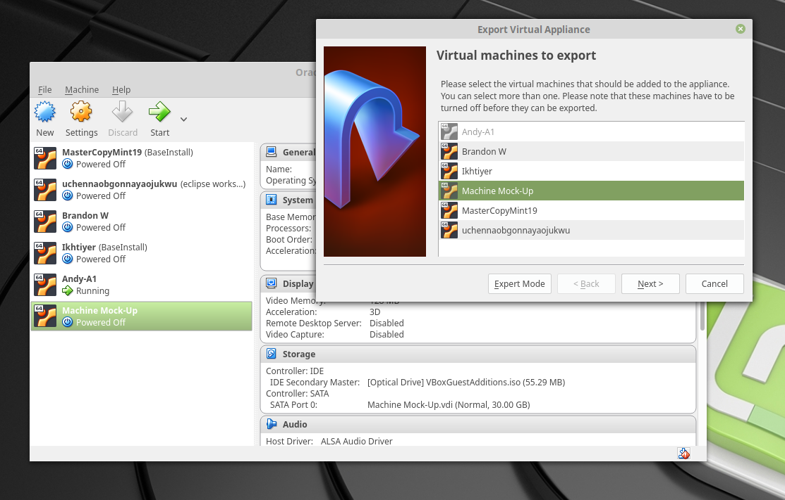
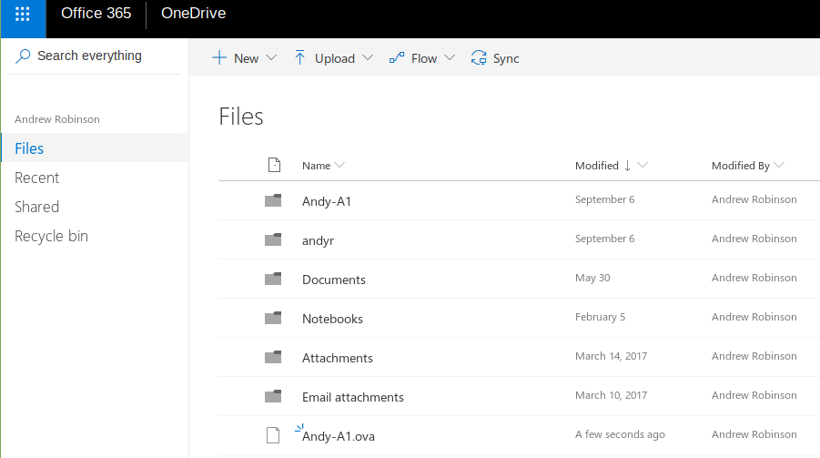

In my CHS Web Design/Development class, we created virtual machines for the purpose of keeping our files and work separate from each other and the students in other classes. Our instructor provided us with a master system to make our VM's from.
To start, using the master VM provided, we made a copy of it. This copy was provided my Mr. McClendon.
During the cloning process, we made sure to clone everything in the machine in its current state
After cloning, we then backed up our VM as an Ova to the cloud. My choice of cloud services was Microsoft Onedrive.
At long last, came the time to customize my VM. During this process, I used sudo passwd change to change the password on the VM from the default compsci, to something else (which shall not be revealed). I also proceeded to change the background to a Legend of Zelda Majora's Mask Background